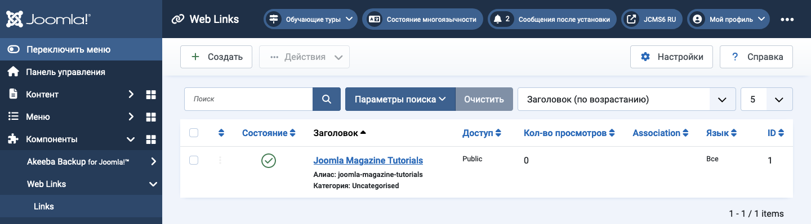

Joomla Help Screens
Веб-ссылки
Описание¶
Компонент Weblinks позволяет управлять ссылками на другие веб-сайты и организовывать их по категориям для отображения на вашем сайте. При желании вы можете разрешить посетителям добавлять новые ссылки. Этот компонент не включен в Joomla 4 или более поздние версии, но его можно получить с сайта загрузки и установить как любое другое расширение.
Общие элементы¶
Некоторые элементы этой страницы рассмотрены в отдельных статьях справки:
- Панели инструментов.
- Фильтры списка.
- Заголовки столбцов списка.
- Порядок элементов списка.
- Пагинация списка.
Как получить доступ¶
Выберите Components → Web Links → Links в меню администратора.
Скриншот¶

Переведено с помощью openai.com